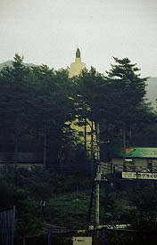
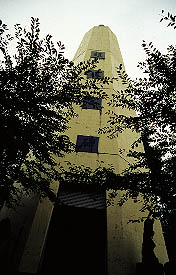
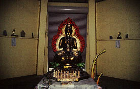
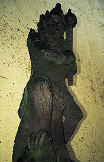
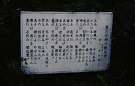

鎮魂之碑/群馬県月夜野町
< 月夜野の温泉宿に泊まった時の事である。

宿の窓から黄色い塔が見えた。朝の散歩がてら行ってみる事にする。
何故かパラグライダースクールの一画にあるため、浮かれポンチな若者の「何だ、コイツ」という視線にさらされながら塔に近付く。

この塔は終戦直後、インドネシアで起きたスマラン事件における犠牲者の鎮魂碑として建てられたものだそうだ。先端には砲弾がかたどられている。
塔の下にはジャワ島各地の石と収容された刑務所の土が埋められているとの事である。
さて。
そもそもスマラン事件とは何か。刑務所には「誰が」収容されていたのか。
詳しい事は良く知らないゆえ迂闊な事は書けないのだが、インドネシア人と日本人の間におこった事件で双方に多数の犠牲者が出たらしい。
 
塔の内部はガラーンとしており中央に仏像がまつられている。また、周囲を取り囲むようにインドネシアの神様達が配置されている。
草むらの中にあった詩の記された看板が印象的だった。
2000.10.
珍寺大道場 HOME